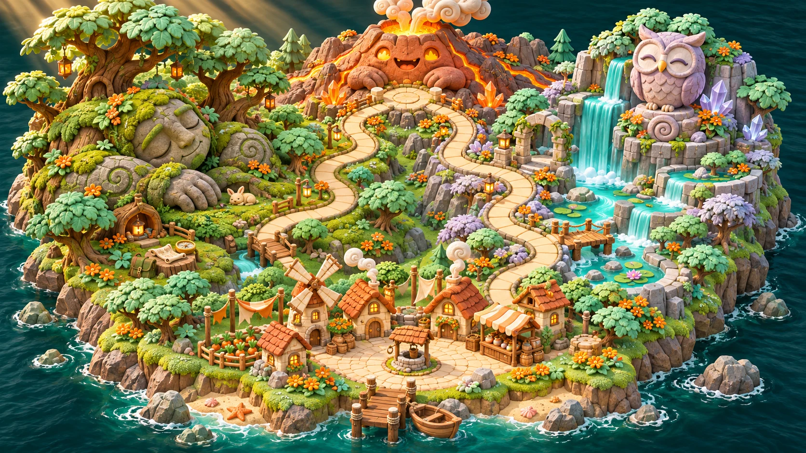

Mosswood
Brambleback has guarded the forest bridge for centuries. Help the old stone giant balance the supplies, and he’ll lend you a cooling seed.
Mount Ember has opened its eyes. The whole kingdom is counting on one very small explorer.
Start your adventure →Explore the kingdom ↓✦ A WORLD WORTH SAVING
You’re Rowan, apprentice cartographer. You’ve mapped every trail in Bramblewick, but this morning the rivers are steaming and the mountain is growling. Find out what woke it before the village runs out of time.
01 / BRAMBLEWICK
Two routes. Two guardians. The tool you earn changes how you reach Mount Ember.

Brambleback has guarded the forest bridge for centuries. Help the old stone giant balance the supplies, and he’ll lend you a cooling seed.
The owl archivist hides her clues in river songs. Read closely to earn an echo shell that can call across the crater.
02 / PLAYABLE PREVIEW
Choose a route, earn XP and a tool, then use both reading and math to get through the final encounter.
Pack: a compass and an empty journal.
03 / FOR FAMILIES & EDUCATORS
Clues ask players to find details, identify a cause, or back up an inference. What they understand changes what they do next.
Counting, operations and multi-step problems get tools into the player’s hands. The story gives each answer a job.
Each wrong answer gives a specific hint and another try. Three levels let players revisit the same adventure with different questions.
The demo uses original practice questions informed by common elementary assessment skills. It previews the learning loop and story. A full curriculum, district reporting, and evidence of test-score gains are outside this preview.